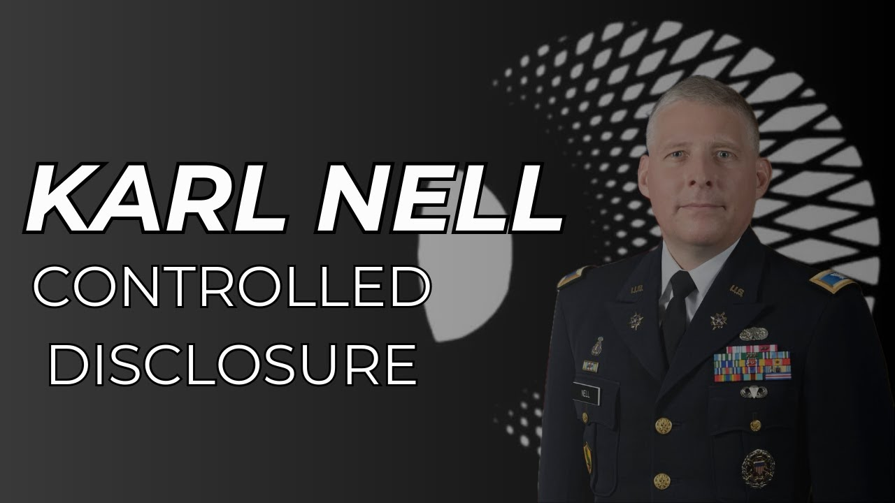

SOL Foundation: Karl Nell - A Key Figure in UAP Disclosure

Published: 2024-02-14 · Duration: 22:15 · Channel: UAP Gerb
Description
My friends,
Today I wanted to dive into Col. Karl Nell's Discussion at the SOL Foundation focusing on the Schumer Amendment and Controlled Disclosure.
For those who don't know, the SOL Foundation is a group of scientists/academia, military personnel, and government/policymakers that seek to educate the public on the academic legitimacy of UAP and push for a post-disclosure world. The SOL Foundation includes figures whose credibility is beyond reproach such as former depsec Christopher Melon, whistleblower David Grusch, Stanford Pathology Professor Gary Knolan, PhD Physicist Kevin Knuth, Nell, and more!
In his talk, Nell tells shocking revelations regarding legislation and controlled disclosure campaigns around the UFO/UAP phenomena. I found Nell's discussion incredibly insightful and powerful so I wanted to share a deep dive with all of you!
We don't stop at just his speech.... We will also cover two omitted slides that have astounding ramifications as well as the strong possibility Nell himself was one of the 40 whistleblowers David Grusch interviewed.
0:00 Intro 1:34 SOL Foundation Overview 2:35 Schumer Amendment Overview 4:09 UAP VS. TNO 6:37 Schumer Amendment Executive Summary 7:13 UAP Terminology 8:39 Eminent Domain 9:42 Reasons for Non-Disclosure 11:32 Way Forward: UAP Campaign Plan 15:32 Omitted Slides (Kardishev & Taxonomy) 18:48 Whistleblower Nell 21:23 Conclusion
Nell Full Video: https://www.youtube.com/watch?v=-1QCFtod6i8&t=577s
Debrief Article: https://thedebrief.org/intelligence-officials-say-u-s-has-retrieved-non-human-craft/
Twitter Whistelbower Thread: https://twitter.com/HighPeaks77/status/1757194168604955075
Omitted Slides: https://twitter.com/matthew_pines/status/1757223639160680789
Music by the always talented: https://www.youtube.com/channel/UCz71_7z7NphLPZ0l_7G3Llg
JOIN THE UAPGERB DISCORD: https://discord.gg/UqzTqkXAWJ
ufo #uap #uapnukes #uapdisclosure #ufology #ufonews #ufosightings #uapsightings #ufofootage #uapfootage #hynek #condoncomittee #Jallenhynek #projectsign #projectgrudge #projectbluebook #bluebook #ufocongress #SOL #solfoundation #karlnell
Transcript
Show transcript
On June 5th, 2023, the now legendary debrief article titled, Intelligence Officials Say U.S. Has Retrieved Craft of Non-Human Origin by Leslie Keen and Ralph Blumenthal took the world by storm. This article introduced the world to David Grush and solidified the fact the USG is in possession of craft of non-human origin and actively attempts crash retrieval and reverse engineering of these anomalous vehicles. Within this article, one Carl Nell has mentioned, a now retired Army Colonel who worked with Grush on the UAP Task Force. While Nell has one quote in this article supporting the assertions of David Grush, he states an astounding fact, quote, his assertion concerning the existence of a terrestrial arms race occurring subrosa over the past 80 years focused on reverse engineering technologies of unknown origin is fundamentally correct, as is the indisputable realization that at least some of these technologies of unknown origin derive from non-human intelligence. Hey guys, it's UAP Gerb and today I wanted to do a quick video talking about Carl Nell and his crucial role in UAP disclosure. The importance of Nell's data and position on UAP as detailed in his recent Soul Foundation symposium talk simply cannot be understated. Guys, you know me, this is not just a reaction video of Nell's 31 minute talk at the Soul Foundation. I've already picked out all the important parts I want to discuss, made the proper connections, and so let's go through it. I'm not here to waste your time. Let's start. Before we break down Colonel Nell's speech on the Soul Foundation on the Schumer Amendment and the push for controlled disclosure, let's quickly cover what exactly the Soul Foundation is. The Soul Foundation is a group of scientists and academia folk, military personnel, and government or policy makers that seek to educate the public on academic legitimacy of UAP and push for a post-disclosure world. The Soul Foundation includes figures whose credibility is beyond reproach, such as former depsec Christopher Mellon, whistleblower David Grush, Stanford pathology professor Gary Nolan, PhD physicist Kevin Knuth, Colonel Nell, and more. Nell spoke to the symposium in November 2023 at the Nolan Laboratory of the Stanford School of Medicine, so let's break down and cover his key points. If you have your finger on the pulse, you'll remember this speech happening and some apparent leaked slides from his presentation, but it's not till February 2024 we've actually got to see the whole presentation. Nell begins by breaking down the groundbreaking Schumer Amendment. Well, 10 years ago, probably the Schumer Amendment would have been viewed as a UAP UFO disclosure. I've talked about this piece of legislation at length in almost every single one of my videos, but thankfully Nell provides a comprehensive summary of this legislation. He goes on to discuss background to the UAP Disclosure Act, citing the importance of Leslie Keane's article that appeared on the 16th of December, 2017, bringing FLIR, Gimbal, and GoFast to the public domains as a major paradigm shift. Nell thanks Chris Mellon and Lou Elizondo for their tireless work to get these videos released and move the ball forward on UAP. So certainly that was a key incident. The next piece was, I would argue, the David Grush, Ryan Graves, David Fraver testimony before Congress, again lowering the threshold of making this topic respectable and incentivizing some discussion about it. Two of the legislators that sponsored this bill are in the Gang of Eight. The Gang of Eight includes the leaders of each of the two parties from the Senate and House of Representatives, and the chairs of the ranking minority members of both the Senate Committee and the House Committee for Intelligence as set forth by the 50 USC purpose. Certain members of Congress are legally entitled to hear about all information pertaining to SAPs and secret programs. Nell goes on to state the importance of the two members here, who are privy to all read and access, yet have not been informed on UAP. Colonel Nell then goes on to talk about the scope of the legislation and how changing reference terminology can start to strip away the stigma. You know, shift UFO to UAP, USO to USP, flying saucer to UAP, and ETs to NHI. I think this is a beautiful reference by the Colonel, as terms like UFO, flying saucer, extraterrestrials even, are deeply ingrained in this stigma and are often scoffed at when mentioned, but UAP, NHI are now termed an official legislation and must be taken seriously. Take a look here at the now six characteristics of UAP referenced. I often reference the five as listed by Lou Elizondo, but note item six, physical or invasive biological effects. This is a fascinating addition likely brought to the table by Gary Nolan, who is studying this aspect of the phenomenon. Think about the fear Wagan felt when he saw the UFO craft, or something like Havana syndrome. The Schumer Amendment focuses specifically on UAP, not TNO, as this graphic beautifully highlights unknown unknowns. Let me read here what the actual legislation says, so we know specifically what they intended with Schumer. UAP is any object operating or judge capable of operating in outer space, the atmosphere, ocean surface, or undersea, lacking prosaic attribution, due to performance characteristics and properties not previously known to be achievable based upon commonly understood principles of physics. There's a massive difference between UAP and TNO. And there's a huge distinction between these, and Schumer makes this explicit. So TNO is a class of objects that temporarily resist prosaic attribution by the initial observer due to performance or due to environmental or system limitations associated with the observation process, but that nevertheless have a known accepted human origin. So TNO is the stuff that you mistake at the time of observation, but you later figure out like what it is. So if you look at Blue Book, you know, depending on the statistics you want to use, the 94% or the 80% of what they spent their time on was TNO, was all explainable. The residuals. To continue touching on the legislation here, NEL references a slide on the NDAA's Executive Summary. The key takeaway here is utilizing the National Archives to archive all UAP data. NEL states what we are all thinking. Nobody necessarily trusts that's going to happen, and I think. Therefore, the review board will provide oversight. Unlike the 1992 JFK Records oversight, here NEL references the issue of materials, biological evidence of NHI and technology of unknown origins. Thus, the Schumer Amendment allows for eminent domain of these materials. Colonel NEL explains the terms NHI, legacy programs, prosaic attribution, and TuO that appear specifically in the Schumer Amendment. He makes it apparent that the NDAA was searching specifically for anything that is non-human related. These are terms of reference in the legislation. So non-human intelligence, at least 18 times cited in there, any sentient intelligent non-human life form, regardless of nature or ultimate origin that may be presumed responsible for UAP based on the earlier definition, or of which the federal government has become aware. Legacy program, all federal, state, local government, commercial industry, academic, private sector endeavors to collect, exploit, versus engineer, TuO, or biological evidence of NHI. Prosaic attribution, you remember this was in both of those terms, UAP and TNO. Prosaic attribution, having a human, either foreign or domestic origin. So UAP is non-human, TNO human. Technology of unknown origin, this is very important for the eminent domain clause. Any material or metamaterial, ejecta, crash debris, mechanisms, machinery, equipment, assemblies, or sub-assemblies, engineering models or processes, damage or intact aerospace vehicles, or damage or intact ocean surface or undersea crap associated with UAP, or incorporating science and technology lacking prosaic attribution or known means of human manufacture. The kernel then goes on to highlight arguments for and against eminent domain of all UAP record and materials. And for those of you who don't know, eminent domain is essentially the federal government's ability to take whatever they want, whenever they want. What is interesting here is that some of the cons infringe on property ownership. Here Nell is specifically referring to private corporations in possession of UAP and UAP material. Nell moves on to make the key distinction between control disclosure and catastrophic disclosure. This difference being control disclosure uses a campaigned plan, and catastrophic disclosure is essentially the opening of the floodgates. All information dumped out there by possibly an adversary or NHI themselves to create social disruption or other means. Unfortunately the Schumer Rounds amendment was watered down and gutted by adversaries to pro-disclosure. Hopefully this bill in its entirety will be released in the near future, maybe the 2025 NDAA. Here Nell states reasons for and against non-disclosure. This is an extremely intriguing slide and logically all six reasons make sense. National security implications, lack of a credible plan, social disruption, covert agreements cover for misdeeds, and organizational intrusion slash distraction from priorities. We know from Grush an almost cold war has been conducted to keep knowledge of UAP from adversaries, specifically China and Russia, addressing the national security risks posted here. I am really interested in the new physics slash technologies that have unprecedented ramifications for all human society. And look at the covert agreement section, NHI quid pro quo. Is it possible and true that the USG has made deals or agreements with NHI, as some people have suggested? And the cover for misdeeds, this is also addressed by Grush. Part of the reason for the cover up is in fact feudalistic dominance, and numerous crimes including murder have been conducted to keep these secrets. But now take a look at the cons or essentially pro-disclosure agreements. Under prevent loss of technological dominance here, look at, some evidence suggests the USA may be losing a UAP arms race. If this is true and Russia or China are near breakthroughs of harnessing NHI, this has global power shift levels of implications. As Nell states, all of these issues are better solved in an academic sector and are largely not government issues besides the cold war and arms race. And now we arrive to Nell's famous slide which partially leaked back in November 2023 titled, Way Forward UAP Campaign Plan Lines of Effort. This slide is absurdly perplexing so let's break it down. To reach a post-disclosure world with proper oversight restored, catastrophic disclosure avoided, and scientific understanding advanced? Nell envisions a campaign with five major phases through four major channels, the public sector, philosophical investigation, scientific research, and the private sector. Phase zero consists of shaping the narrative around UAP which was done successfully by ATIP, DOD videos, the 2017 New York Times article, and UAP Task Force. Notice guys how Arrow is not listed here, I'm sure Sean Kirkpatrick is seething. Phase one, which has a targeted end date of January 1st 2024 seems all but complete, ending with the Schumer legislation. Government acceptance has been achieved, UAP is now largely a bipartisan issue, and reactive hypothesis generation is popping up such as the newly published paper claiming that some UAP are plasma-based pre-life. Phase two aims to correlate signatures by January 1st 2026, garnering a more stringent approach and harnessing of academia like the Soul Foundation is doing. Likely due to the stigma persisting around serious academic research, this phase is still at risk. Phase three plans to be completed by October 1st 2030 and is seen as an inflection point by Nell, possibly serving as the disclosure point for humanity. This phase seeks public acceptance, which is a tall ask if you ask me. Phase four to be completed by the 1st of October 2034 aims to fully answer the five W's, who, what, when, where, and why. This phase is off-target, and finally phase five has an indefinite timeline, looking for an interactive approach with UAP in a strategic end state, possibly meaning integrating NHI and NHI technology with our earth and civilization. Nell has a couple ideas for each of the four channels and how they can lead to a post-disclosure world. So this is the government line of effort. Pass Schumer, grant legal amnesty, centralized the data, create a Manhattan project to address this area, sponsor National Science Foundation grants, charter an NIE, National Intel Estimate to assess the public-private positions of every country with this topic and where they are with it, and use that to tee up a United Nations summit or World Congress on developing new norms of behavior in this context. I think we need a sociological model for analyzing the societal impact for disclosure and then developing mitigation strategies a priori to address that. Now, some people think that maybe less of a concern or more of a concern is kind of irrelevant, like it's an unknown right now, but we need a plan to address it to lower that concern. Codify the laws of ethics in an environment where we might have a hierarchy of being, where everyone isn't necessarily having equal competitive potential. How do you, it's essentially translating our special relativity version of ethics to a general relativity version of ethics, where you've got the problem of a more advanced civilization coming in and disrupting a less advanced civilization, developing theoretical as well as practical methods to analyze metamaterials. And let's get to the point where we can actually talk about utilizing the, what is it, 339 isotopes and engineering materials out of that instead of the 118 elements that were been sort of limited to. We need to work in the business utility of forming consortiums to actually look at this material if the government was actually going to make it available. Codify presence and legal standards for determining intellectual property rights over the material, analyzing economic incentives and the impact to the economy if new energy sources were developed. Nell's presentation is poignant and powerful with astounding implications, but we can go a little deeper here. Now let's visit two backup slides not shown on Nell's presentation as provided by Matthew Pines. The first of these slides looks to replace the Kardashev Scale. I talked about this in part two of my iceberg, but essentially the Kardashev Scale benchmarks the technological capabilities of a civilization and places them into three types. A planetary civilization that is able to harness all the energy from their home planet, a stellar civilization which is able to harness all of the energy from its host star, and a galactic civilization which is able to harness the complete energy output of its home galaxy. We are currently in estimated 0.72 on the Kardashev Scale. Look at this line. Since it is not implausible, given the diversity of UAP sightings, that numerous civilizations may be interacting concurrently. That is just such an intriguing thought, but this new scale looks to develop a universal civilization development datum to try and forecast NHI motives based on attributes. Instead of just a sliding scale, this is a new multivariable system in which what they are, what they know, and who they are, are gauged and plotted. The end states for these civilizations are quite astounding. Spacetime manipulation, understanding reality, and immortality slash physical transcendence are the three kind of variable reference points of these civilizations. I am honestly blown away by this slide, the proposed taxonomy of UAP and origin hypothesis, and struggle to know where to even start. UAP, hypothesis, and NHI are broken up here into three main categories, physical, psychophysical, and metaphysical. Within the physical are origins that span from expected to downright bizarre. We have, of course, our natural phenomena, humans, inner galactic, ETs, and even proto-humans, but then we also have stranded gods, unknown regions of spacetime, disconnected hyperspace, the 3D avatars, or holograms, as Grush once mentioned with the holographic universe. Within physical we even get weirder, with colliding universes, parallel universes, macro quantum fluctuations, pan-galactic entanglement, and distance recursion. And now we get the medical physical, in which supernatural forces, incorporeal life forms, ascended masters, angelic or demonic beings, artificial realities, and more are mentioned. This is wild stuff, and actually, thinking of some fun, please let me know if you would like me to do a tier list on these proposed taxonomies. Just my personal opinion on all these topics, but of course that could be an absolute blast because I'll tell you right now, I identify more with the physical range of explanations and not just the, you know, pretty standard stuff, but I'd like to get into that. Things with Nell couldn't get any weirder, right? But what if I told you he was one of the 40 first hand witness whistleblowers that Grush interviewed? Check out this Leslie Cain clip. David Grush said in his testimony that he talked to 40 people over four years, all of whom had information on a secret military program that has non-human craft and remains. Is it surprising to you that none of those 40 people has spoken out? It is, it actually isn't Elizabeth. I mean, as some of them have, one of them actually was in our article in the debrief, a former Army colonel named Carl Nell. I think maybe some of them have spoken out a little bit and we just don't maybe put it all together, but it really isn't surprising because of the repercussions that people face. And Dave Grush is an example of that. He talked a little bit of in the hearing yesterday about the repercussions that he's faced, which are very harmful to him, both personally and professionally for speaking out. So I think others have the same concerns and they've seen it happen to him. They want to wait and make sure it's safe for them to come forward and not have to face the same kinds of things that David Grush faced. Yeah, can you elaborate on that? And he just said he had some. I'd like to thank Twitter Ace UAP News at highpeak77 for making a thread on this. In Colonel Nells LinkedIn bio, he served as the technical intelligence operations officer for the DIA. Here states, quote, first person deployed from the DIA directorate of intelligence production and analysis to participate in multi-agency planning for Operation Iraqi Freedom as the foreign materials program command representative to U.S. CENTCOM slash CFLCC in Kuwait. Served as the C slash J2 for the one star combined joint captured material exploitation center in Iraq. And as we know from Schellenberger's article, dozens of government whistleblowers have given testimony to Congress Pentagon and Inspector General says sources that there have been ongoing crash retrieval programs of both foreign vehicles and UAP. Could Nells role in this Iraq mission? Seeing him encounter a downed UAP leading to his first hand witness testimony, I got a lot more to dive into here. So stay tuned. But thank you again, UAP News for that Twitter thread. Hey guys, I know this video turned out almost as long as Colonel Nells talk itself. But still, I thought it important to try and break down everything that he said in this soul symposium. I hope you guys enjoyed this breakdown. There's a lot of other interesting talks from this soul foundation event I want to go through, including grushes, Chris Melons, Kevin Knuths, Gary Nolan, Jacques Valais as well. So if you guys like this, stay tuned for that. I had a lot of fun making this. I hope you don't mind the not kind of reaction style. I wanted to watch this and make sure I had all my thoughts first before I reported information to everybody, not do kind of a not much effort, watch through together. So I hope you enjoyed it just a quick video today. Please remember to like and subscribe and I will catch you guys on the next video. Thank you.
Entities
People (36)
- Blue Book
- Carl Nell
- Chris Mellon
- Chris Melons
- Christopher Mellon
- Dave Grush
- David Fraver
- David Grush
- Gary Nolan
- Inspector General
- JFK Records
- Jacques Valais
- Kardashev Scale
- Kevin Knuth
- Kevin Knuths
- Leslie Cain
- Leslie Keane's
- Leslie Keen
- Lou Elizondo
- Matthew Pines
- National Intel Estimate
- National Science Foundation
- Nells LinkedIn
- New York Times
- Non-Human Origin
- Ralph Blumenthal
- Ryan Graves
- Sean Kirkpatrick
- Senate Committee
- Soul Foundation
- The Soul Foundation
- UAP Gerb
- UAP News
- UAP Task Force
- United Nations
- World Congress
Places (10)
- China
- Havana
- Iraq
- Kuwait
- Manhattan
- Russia
- U.S.
- USA
- the Kardashev Scale
- the Soul Foundation
Organizations (4)
- Army
- Intelligence Officials Say U.S.
- the House Committee for Intelligence
- the Soul Foundation
Download transcripts: SRT · VTT · JSON · TSV